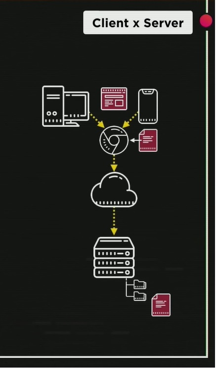

Os livros estão arquivados em PDF na pasta PROGRAMAÇÃO-GERAL -> LIVROS
R: O JavaScript é uma linguagem de programação utilizado tanto para o servidor (servidores/arquivos das empresas) quanto para o cliente (usuário). Os servidores guardam os arquivos que os clientes buscam no momento em que fazem pesquisas e/ou solicitam o acesso a arquivos, imagens, dados (pelas páginas web).
A linguagem JavaScript, apesar de atender tanto cliente quanto servidor, é considerada client side, ou seja, mais voltada para o usuário do que para os servidores.
As páginas web são compostas, em sua maioria, por 3 tecnologias muito importantes:


Enquanto HTML e CSS são consideradas tecnologias de construção/desenvolvimento de sites, JavaScript é considerada linguagem de programação.
R: Foi a Netscape que criou o Javascript, pois estava criando uma linguagem chamada livescript, mas, pelo sucesso que a linguagem Java fazia na época (era considerada a linguagem do futuro), os fundadores da Netscape decidiram renomear sua linguagem de livescript para JavaScript.
R: Apesar de possuírem nomes parecidos e algumas funcionalidade serem, também, parecidas, as duas linguagens não possuem relação (parecem apenas pelo empréstimo da palavra Java que os fundadores da Netscape fizeram por puro marketing).
Essas funcionalidades parecidas (a exemplo do comando if) ocorre porque as duas linguagens utilizam a linguagem C como fundamento.
R: A Microsoft, pelo sucesso do JavaScript, decidiu criar sua própria linguagem, melhorando as funcionalidades do JavaScript e adicionando outras. O nome dado a essa nova linguagem foi JScript.
A Netscape, para se proteger de qualquer possibilidade de clonagem, cópia, apropriação de sua linguagem, contratou uma empresa de padronização para realizar a padronização do JavaScript, a ECMA - European Computer Manufactorers Association (Associação Européia de Fabricação de Computadores), surgindo a linguagem ECMAScript (versão padronizada do JavaScript).
A ECMAScript possui várias versões [1.0 (ano de 1997), 2.0 (ano de 1998), 3.0 (ano de 1999), ES5 (ano de 2009), ES6 (ano de 2015), ES2016 ( ano de 2016), ES2017 (ano de 2017) e ES2018 (ano de 2018)].
Como Google Chrome possuía uma versão de JavaScript com código aberto/livre (V8), além de gerar códigos JIT (Just in Time), um grupo de programadores o utilizou/alterou para ser utilizado fora de um navegador. Por essa razão foi criado o NODE, que roda o JavaScript fora do navegador.
Cada navegador possui a versão de JavaScript com um nome diferente:

Abaixo é possível encontrar mais opções de empresas que utilizam JavaScript.